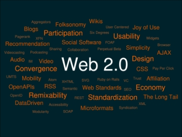

:: Tecnologie Web ::
Quanto ti è piaciuta la materia?
|
Come ti è sembrato il corso?
|
| |Ahhhhhhhh il Web 2.0
|
Docente: Paolo Ceravolo
Materiale ufficiale
Nota: richiede login universitario
Guida XML
Laboratorio
Prima Parte (XML - CSS)
Seconda Parte (Servlet - JSP)
Appelli d'esame svolti
Validatori
Elenco dei validatori del W3C:
Note
- l'esame consiste in una prova scritta + progetto + orale.
- Quest'anno (2008/2009) è possibile sostenere l'esame scritto e presentare il progetto in un momento successivo, ovviamente entro un numero accettabile di mesi, non dopo duemila anni.
- 06/2010: Buona parte del punteggio del progetto è dato dalla relazione. In particolare il prof. ama gli schemi MVC ed il modello di valore.
Link Utili
UniCrema | Secondo Semestre | Secondo Anno | TS | TerzoAnno | ComplementariOMagistrale | Informatica